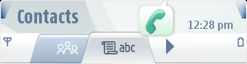
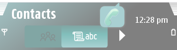

Tabs Indicators
Tabs are displayed in the Navi Pane. They indicate selectable views and
may contain either icons or text. Active tabs can be selected with a
horizontal movement: the tab to the left or right is highlighted and
the look of the previously active tab changes to inactive. Create the
tabs in the same way as any other theme component. However, extra
caution needs to be taken to ensure that icons or text on top of tabs
are displayed within the active or passive areas.
A tab is sliced into three pieces: left, middle, and right. The aspect
ratio of both left and right pieces is fixed as the ending parts. The
width of the middle is dynamic, and depends on the length of the whole
tab. You can choose the colors for the active and passive tab icons and
texts. Separate colors are used for items displayed on a highlighted
active tab and on a passive tab(s). The figure below
illustrates
default tab indicators and customized tab indicators.


Figure:
Default
and customized tab indicators